The Recall Card

The question, the move, and how the answer is read off. Everything else on this page explains this picture.
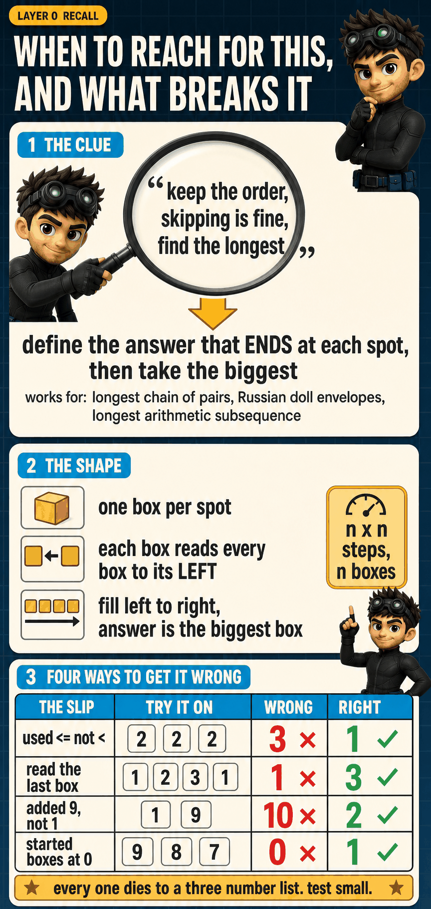
The clue that triggers it, the shape it takes, and the four ways it breaks.
Three Places You Can Stop
Below the recall card, the page is built in three layers. Each is a real stopping point, so you do not have to reach the end to walk away with something whole.
| Layer | What it gives you | Code? |
|---|---|---|
| 1. The Story | you understand why the algorithm exists and roughly what it must do | none |
| 2. The Algorithm | you could write it yourself | a little |
| 3. The Code | you could ship it and defend it | all of it |

Stop after any step. Each one leaves you with something complete.
Every number on this page is one of these five, and we always say which. Mixing up a spot with a count is the single biggest source of bugs here.
The Story
No code at all. By the end of this layer you will know why the obvious idea fails, what question we end up asking, and why the same work keeps happening.
stop here and you still understand it1The QuestionLAYER 1
Longest Increasing Subsequence (LeetCode #300)
Given a list of numbers, return the length of the longest strictly increasing subsequence.
In plain words: pull a rising chain out of the list, where each number beats the one before it.
Two rules. You may skip numbers. You may not move them.
From [5, 6, 1, 2, 3] | Allowed? | Why |
|---|---|---|
1 → 2 → 3 | yes | skipped the 5 and the 6, left the rest where they were |
1 → 3 → 2 | no | the 2 comes first in the list, so this shuffles them |
2 → 2 | no | each one must be bigger. Equal is not bigger. |
And what do we hand back? A count. How many numbers are in the longest chain. Not the chain itself. That distinction matters more than it sounds, and we will come back to it.
The list we use the whole way through
INDEX is the spot. VALUE is the number sitting at that spot. They live on separate rows so they never get confused with each other.
Saying "we are at 3" is ambiguous, because it could mean the fourth spot or the number three. Saying "at INDEX 3 the VALUE is 2" cannot be misread. We will be this careful all the way down.

Skip yes, reorder no, and the answer is a count. Here it is 3, from 1 → 2 → 3.
2The Easy Idea, and Where It BreaksLAYER 1
This deserves to be taken seriously, because it is not a silly idea. It never breaks a rule. Every number it grabs really does beat the previous one, so whatever it builds genuinely is a rising chain. Let us watch it run.
| See | What we do | Chain so far |
|---|---|---|
| 5 | nothing grabbed yet, so grab it | 5 |
| 6 | beats 5, grab it | 5 → 6 |
| 1 | does not beat 6, skip | 5 → 6 |
| 2 | does not beat 6, skip | 5 → 6 |
| 3 | does not beat 6, skip | 5 → 6 |
It hands back 2. The real answer is 3.
Where exactly did it go wrong?
This is the important question, and it is easy to answer badly. It is tempting to say "it went wrong at the end, when it got stuck". That is where the damage showed up, not where it happened.
It went wrong at step 2, grabbing the 6.
Look at what that grab actually did. It made the chain longer immediately, from 1 number to 2, which felt like pure profit. But it also raised the bar. Before the grab, anything above 5 would do. After it, everything had to beat 6. And the whole rest of the list, the 1 and the 2 and the 3, sits under that bar.
So a move that looked free cost us three numbers we had not even reached yet.
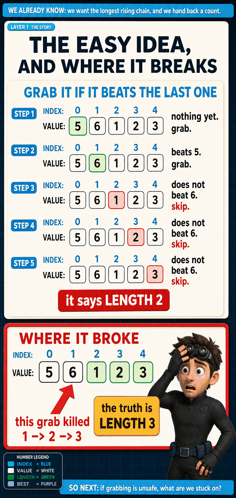
The mistake is not where it got stuck. It is back at step 2.
Could we fix it by starting somewhere else?
1, it would find 1 → 2 → 3 and look clever. But try [1, 100, 2, 3, 4]. Starting at the very beginning it grabs the 1, then grabs the 100, then gets stuck, and answers 2. The real answer is 4. The flaw is not the starting point. It is grabbing at all without knowing what the grab costs later.3What Are We Stuck On?LAYER 1
Let us freeze at one spot and describe the situation with no plan in mind at all.
The full question ("what is the best chain in this whole list?") is too big to hold in your head. So swap it for a smaller one:
This is a much better thing to be stuck on, and here is why. A chain ending here is already half decided. We know the last number. The only thing still open is what sits immediately before it.
And whatever sits immediately before has to satisfy two things: it must be smaller, and it must be earlier. In our list that leaves the 1 and the 2. Plus one more option people forget: maybe nothing comes before at all, and the chain is just the 3 standing alone.
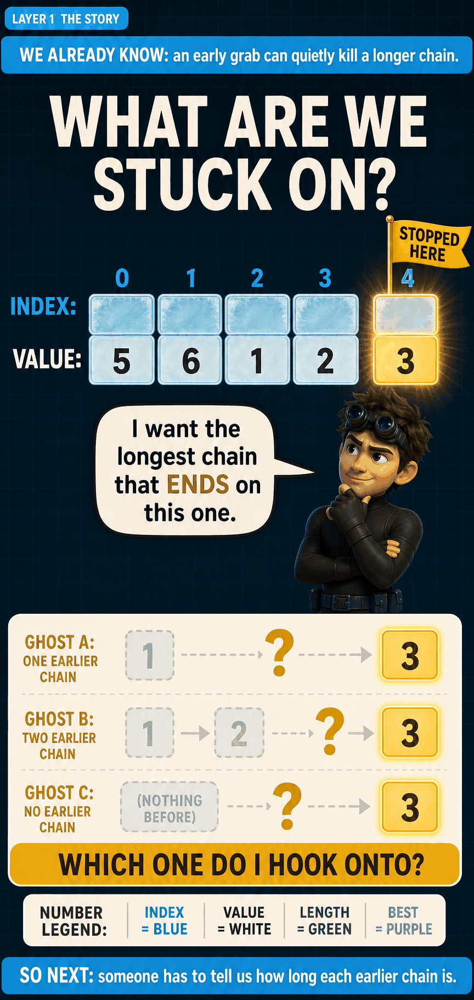
The question is not "take it or skip it". It is "what do I hook onto?"
Notice what just happened, because it is the turning point of the whole page. We tried to explain our problem, and in doing so we produced smaller copies of that same problem. That is always the signal that recursion is about to earn its keep.
4Ask, and Trust the AnswerLAYER 1
People usually learn recursion as "a function that calls itself". That is true, and it is almost useless for solving anything. Here is the version you can actually think with:
That turns an impossible question into a simple exchange:
how long is the chain ending on the 3?
1 → 2now it can finish the job
Giving the question a name
We will be talking about this question constantly, so it needs a name. We will write it:
longest_chain_ending_at(current_index)
That is not code yet. It is just a label, and it is deliberately a long one, because the name should tell you exactly what comes back without you having to remember anything.
1 → 2 has two numbers in itTwo things this promise does say, and two it does not:
| yes | the number at this spot is always part of the chain |
| yes | everything picked earlier is smaller than it |
| no | it never looks to the right |
| no | it is not the answer for the whole list |
That last one catches people out. This question only ever talks about chains ending at one spot. It has no opinion about the list as a whole. We will have to do something extra at the end to get there.
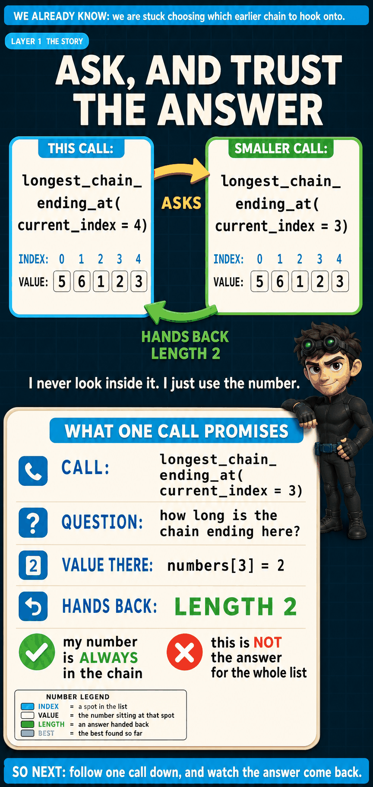
Ask and trust, up top. Exactly what comes back, underneath.
One worry always comes up here: if every question needs a smaller question, does this ever stop? Yes. Every question points at a smaller spot. INDEX 4 asks INDEX 3, which asks INDEX 2, and INDEX 2 has nothing smaller to its left, so it just answers. The ladder has a bottom rung.
Does the smaller question need to know who asked it?
5Down to the Bottom, and Back UpLAYER 1
We are deliberately not drawing a big branching tree. A tree shows a dozen things happening at once, and it is unreadable until you can already read one path. So: one path, all the way down, then all the way back.
Going down means asking
THE BOTTOM nothing smaller to the left, so nothing left to ask
Each step down shrinks in two ways at once. The spot moves left, and the number of things we could hook onto shrinks with it. That is what guarantees we land.
Coming back up means using
This is the half people skip, and it is where every number on this page actually comes from. Going down we asked. Coming up we use.
At INDEX 3, having just been handed LENGTH 1 from below:
1 → 2At INDEX 4, having just been handed LENGTH 2:
1 → 2 → 3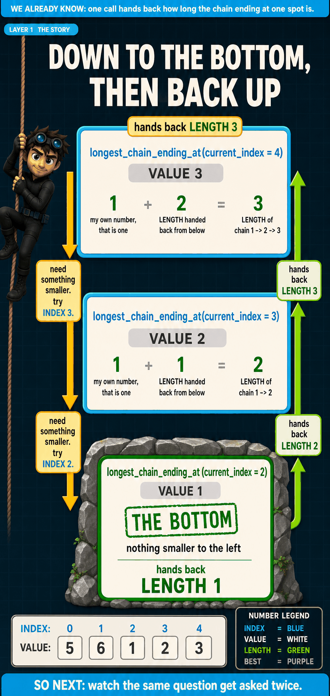
No number here is magic. Each one was handed up from below.
Follow the 3 at the top all the way home. It is 1 + 2. That 2 was not sitting in the list, it was handed up from the question below. And that 2 was itself 1 + 1, where the inner 1 came from the bottom rung. So the final 3 is really the bottom's answer, passed up and added to twice.
At INDEX 3 we wrote 1 + 1. But the VALUE there is 2. Why not 1 + 2?
6The Same Question, TwiceLAYER 1
We only followed one path. Let us look at what happens when we follow all of them, because something wasteful is going on.
Working out the question about INDEX 4, two different routes end up in the same place:
- Route A: INDEX 4 hooks straight onto INDEX 2.
- Route B: INDEX 4 hooks onto INDEX 3, and INDEX 3 hooks onto INDEX 2.
Both finish by asking the exact same thing: how long is the chain ending at INDEX 2?
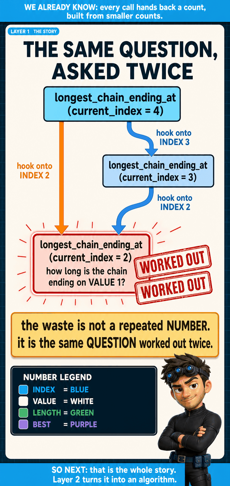
Two different paths, one identical question, worked out from scratch both times.
And that is only inside one branch. Across the whole run on our tiny five number list, the question about INDEX 2 gets asked four separate times. On a longer list this does not grow gently. It explodes.
You now have the entire idea. If you stopped reading here, you could explain to someone why grabbing fails, what question we ask instead, what one answer means, and why the naive version is slow. Everything below is turning that into something a machine can run.
The Algorithm
We take the story and make it exact. The one move that does the work, what to remember, the rule, and how the whole thing becomes a table.
stop here and you could write it yourself7The One Move That Is the AlgorithmLAYER 2
Everything up to here has been about why. This section is the what. If you learn one thing from this page, learn this move, because it is the algorithm. Everything else is scaffolding around it.
Here is the situation. We are filling in the answer for one spot, and every earlier spot already has its answer written down.
The VALUE row decides who is allowed. The LENGTH row decides how good they are. We never mix them up, and we never look at a spot's length until it has passed the value test.
Now sweep left across every earlier spot and check it:
| Spot | Is its VALUE smaller than 3? | If yes, what does it offer? |
|---|---|---|
| 0 | 5 no | nothing. we never even read its LENGTH. |
| 1 | 6 no | nothing. we never even read its LENGTH. |
| 2 | 1 yes | its LENGTH is 1, so it offers 1 + 1 = LENGTH 2 |
| 3 | 2 yes | its LENGTH is 2, so it offers 1 + 2 = LENGTH 3 |
| none | stand alone, always fine | offers LENGTH 1, just our own number |
Then take the biggest offer: max(2, 3, 1) = 3. Write it into the box.
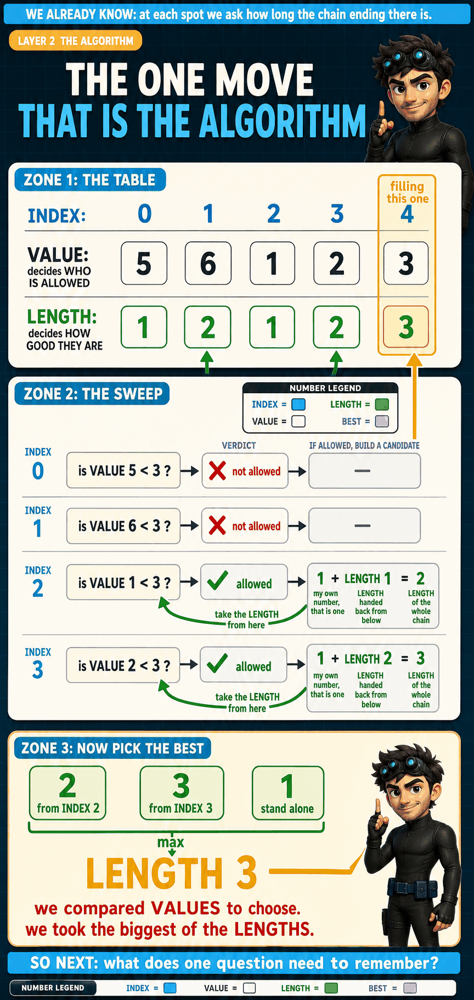
Arrows rise into the LENGTH row only from spots that passed the value test. That contrast is the whole move.
Where the two operations come from
Neither the max nor the +1 is arbitrary, and both are worth deriving rather than memorising, because both change if the question changes.
The max comes from the word "longest". Every offer above is a real, legal chain. None of them cheated. The question asked which is longest, so we keep the biggest. Had it asked for the shortest we would keep the smallest, and had it asked how many ways there are we would add the offers together instead of comparing them.
The +1 comes from adding exactly one number. Each offer takes a chain that already existed and clips our number onto the end. One number joined, so the count rises by one.
+3 feels natural and is completely wrong. We are counting how many numbers are in a chain, not what they add up to. On [1, 9] the answer is 2, not 10.
Why nothing is missing
We have to be able to argue that no valid chain slipped past that sweep, otherwise we are making the same mistake the easy idea made back in section 2.
Take any chain ending on our number. There are only two possibilities. Either something sits immediately before it, in which case that something is at an earlier spot with a smaller value, and we checked every earlier spot. Or nothing sits before it, in which case the chain is our number alone, which is the "stand alone" row.
Why do we not read the LENGTH of the spots that failed?
What if we dropped the "stand alone" row and ran it on [9, 8, 7]?
8The NoteLAYER 2
Imagine stopping halfway and handing the job to a friend. You are allowed to leave them one note. What has to be on it so they can carry on without asking you anything?
Test each idea the same way. If two situations differ only in this one thing, can the remaining answer differ? If not, leave it off.
| Could go on the note | Keep? | Why |
|---|---|---|
| the spot we are at | keep | it says which number our chain ends on, and which spots count as earlier. Change it and the answer changes. |
| the value sitting there | drop | the spot already tells us the value, so writing it down adds nothing |
| the chain built so far | drop | we only ever need how long it was, and that comes back as a number |
| how many numbers are left | drop | that is the spot, counted from the other end. Same fact twice. |
Now we can name it. The smallest note that fully describes the question you have left to answer is called the state. Here, the state is a single spot.
Notice the order we did that in. We worked out what had to be remembered, and only then attached the word "state" to it. The word is a label for something you already understand, not a thing to learn on its own.
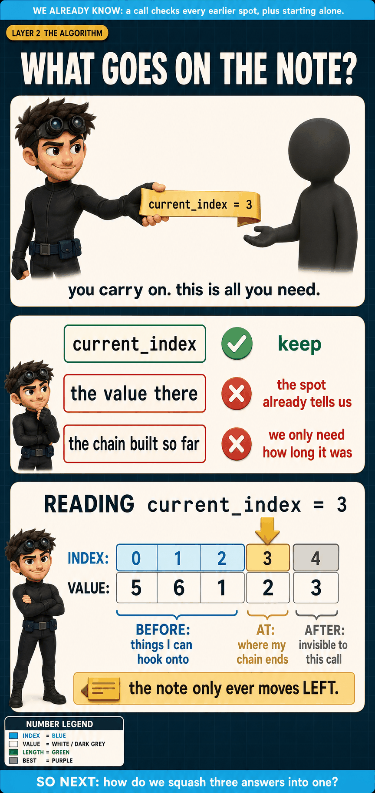
Before the spot: things we may hook onto. At it: where our chain must end. After it: invisible to us.
One detail here matters a lot later: the note only ever moves left. Never right. That single fact is what will tell us which direction to fill the table.
9The RuleLAYER 2
Only now is it safe to write the rule down, because it introduces nothing new. Every piece of it should already feel familiar.
longest_chain_ending_at(current_index) = the biggest of:
1 # stand alone
1 + longest_chain_ending_at(previous_index)
for every earlier spot whose value is smaller
answer = the biggest of those, taken across every spot| Piece | Where it came from |
|---|---|
the plain 1 | standing alone, section 7 |
| "every earlier spot" | the sweep, section 7 |
| "whose value is smaller" | the value test, section 7 |
| the inner question | the promise, section 4 |
1 + | adding our own number, section 7 |
| "the biggest of" | the word "longest", section 7 |
| the last line | the chain has to end somewhere, section 4 |
10Answer Once, Look It Up ForeverLAYER 2
The fix is one sentence: before working something out, check whether we already did.
Both halves come straight from what we already built. What do we look things up by? The note, which is the spot. What do we store? Whatever the question handed back, which is a count. Nothing new has to be invented.
solved_lengths = {}
def longest_chain_ending_at(current_index):
if current_index in solved_lengths:
return solved_lengths[current_index]
longest_so_far = 1
for previous_index in range(current_index):
if numbers[previous_index] < numbers[current_index]:
longest_so_far = max(longest_so_far,
1 + longest_chain_ending_at(previous_index))
solved_lengths[current_index] = longest_so_far
return longest_so_far
answer = max(longest_chain_ending_at(current_index)
for current_index in range(len(numbers)))Only three lines are new, and they are all bookkeeping. Make an empty box. Check it before doing any work. Fill it before handing the answer back.
solved_lengths[2] = 1 means "the longest chain ending on the 1 at spot 2 has one number in it". That is the promise from section 4, word for word.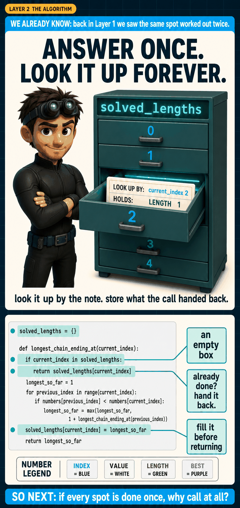
Look it up by the note. Store exactly what the question handed back.
Nothing else changed. Same promise, same move, same +1, same max, same answers. The only thing that disappeared is repeated work.
Why do we look things up by the spot alone, with nothing about the chain so far?
11A Question and a Box Are the Same ThingLAYER 2
Look at what we ended up building. One slot per spot, each holding a count. That is just a list. And a list you look things up in is a table.
So we keep the name. The only thing that changes is the brackets:
longest_chain_ending_at(2)
becomes
longest_chain_ending_at[2]
Round brackets ask for it. Square brackets look it up. Same name, same question, same answer.
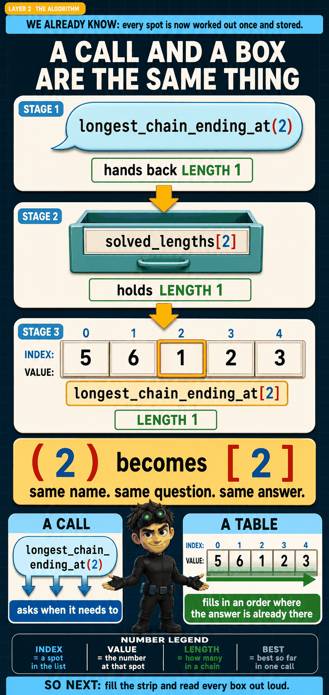
A question, a stored entry and a table box are three places to keep one identical fact.
So what is genuinely different? Only when the answers get made. Asking gets you an answer at the moment you need it, and if it does not exist yet, it goes off and makes it. A table flips that around: fill the boxes in an order where whatever you need is already sitting there. Then you never ask. You only read.
Which order works? Section 8 already told us. The note only ever moves left. So if we fill left to right, everything we could possibly need is behind us and already done.
12Filling the TableLAYER 2
One box per spot. Every box starts at 1, which is the "stand alone" option written as a starting value instead of an option. Then run the move from section 7 at every spot, left to right.
Every box is a sentence. Box 1 says "the longest chain ending on the 6 has 2 numbers in it". Box 2 says "the longest chain ending on the 1 has 1 number in it". If you cannot say a box out loud like that, something has gone wrong.
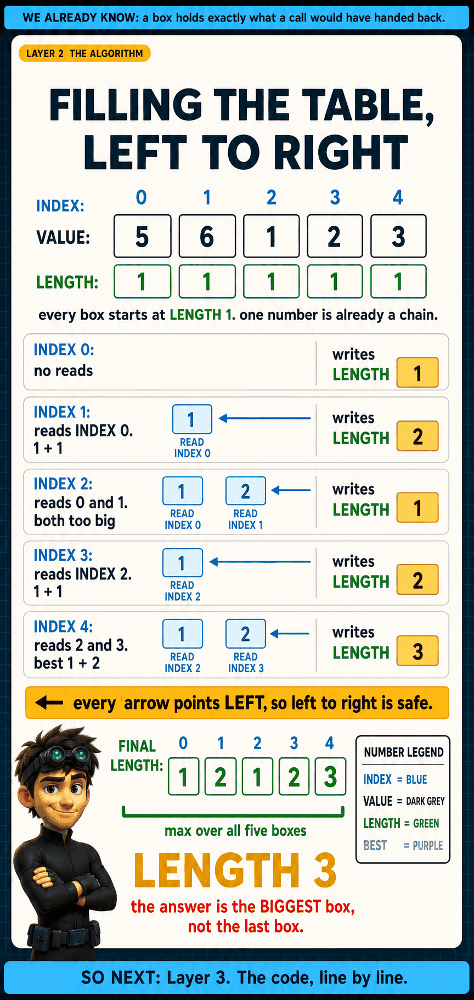
Every arrow points left, which is exactly why left to right is safe.
[1, 2, 3, 1] the boxes hold 1, 2, 3, 1. The last is 1. The real answer is 3.
Could we fill it right to left instead?
1 + 1 = 2 and we would answer 2 instead of 3. You can build a right to left version, but only by changing the question to "longest chain starting here", which flips every arrow. Fill order is not a style choice. It follows from which way the note moves.You could now write this yourself. Layer 3 is about turning it into code you would actually ship, and knowing what it costs.
The Code
Every line, why it exists, what it costs, and the four ways people get it wrong.
stop here and you could ship it13The Code, Line by LineLAYER 3
# Hands back how many numbers are in the longest rising
# chain that ends on numbers[current_index].
def longest_chain_ending_at(current_index):
longest_so_far = 1
for previous_index in range(current_index):
if numbers[previous_index] < numbers[current_index]:
longest_so_far = max(longest_so_far,
1 + longest_chain_ending_at(previous_index)) # RECURSION HAPPENS HERE
return longest_so_far
answer = max(longest_chain_ending_at(current_index)
for current_index in range(len(numbers)))[9, 8, 7] answers 0.< to <= and [2, 2, 2] starts claiming 3. Notice the loop walks over spots while this line compares values, and we need both conditions: earlier in position, smaller in value.1 + pays for our own number. The max keeps this option only if it beats what we already had. The value at our spot never enters the sum.
Six lines, six ideas, every one of them worked out before it was written.
The table version
The same algorithm with no recursion at all. Boxes filled left to right, exactly as in section 13.
def length_of_lis(numbers):
if not numbers:
return 0
# one box per spot, every box starting at 1
longest_chain_ending_at = [1] * len(numbers)
for current_index in range(len(numbers)):
for previous_index in range(current_index):
if numbers[previous_index] < numbers[current_index]:
longest_chain_ending_at[current_index] = max(
longest_chain_ending_at[current_index],
1 + longest_chain_ending_at[previous_index])
return max(longest_chain_ending_at)Notice the table is named the same as the function, so the connection from section 12 stays visible even in the shipped code. No stack depth to worry about, and usually the version to reach for.
Which single line stops the recursive version running forever?
for previous_index in range(current_index). Because the earlier spot is always strictly smaller than the current one, every call moves left, and spots cannot go below 0, so it has to stop. If it looped over the whole list instead, a call could ask itself and never finish. The if check would not save us, because it compares values, not direction.14How Fast, and How Much RoomLAYER 3
Speed
Without storing answers, the work explodes, exactly as we watched in section 6. With storing, there are only as many real questions as there are spots, and each one scans the spots to its left.
| Version | Cost | On the list 1 to 20 |
|---|---|---|
| asking again and again | explodes | 1,048,575 calls |
| storing answers, or the table | n × n | about 400 steps |
Can we throw boxes away?
The usual next trick is to notice that only the last couple of boxes ever get read, and drop the rest. Let us actually check rather than assume, because here the answer is no.
| Problem | A box reads | Can we drop boxes? |
|---|---|---|
| Climbing Stairs, House Robber | only the last two boxes | yes, keep 2 |
| This problem | possibly every earlier box | no, keep all |
Our inner loop checks every earlier spot, and nothing limits how far back a match might sit. In [1, 100, 101, 102, 2] the last box's only legal match is the very first box. Drop it and the answer is gone.
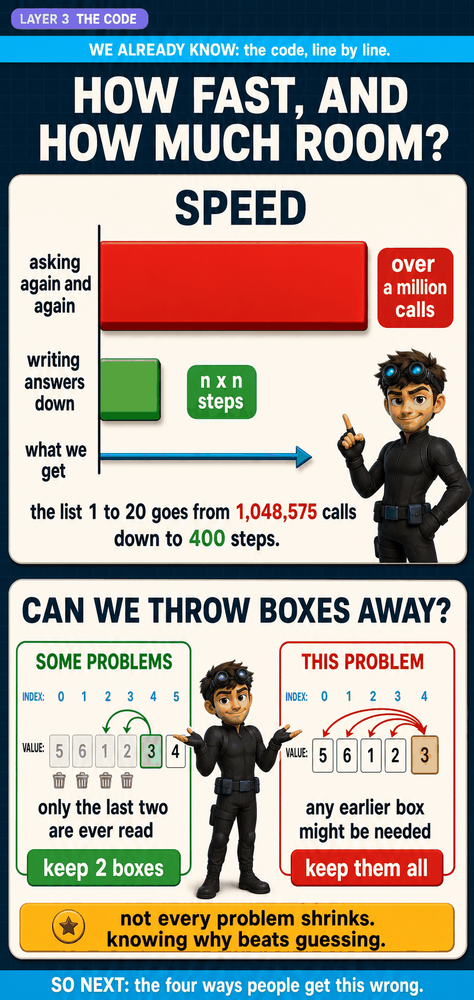
Some problems only look back two boxes. This one may look back at all of them.
15Four Ways to Get It WrongLAYER 3
| The slip | Try it on | Wrong | Right | Why it is tempting |
|---|---|---|---|---|
using <= | [2, 2, 2] | 3 | 1 | equal feels close enough to bigger. It is not. |
| reading the last box | [1, 2, 3, 1] | 1 | 3 | in most problems the last box is the answer. Not this one. |
| adding the number, not 1 | [1, 9] | 10 | 2 | "I added the 9, so add 9." We count numbers, we do not total them. |
| starting boxes at 0 | [9, 8, 7] | 0 | 1 | "nothing found yet, so zero." One number is already a chain. |

Every one of these dies to a three number list. Test small.
Three of these four are the same underlying mistake: losing track of what kind of number you are holding. A spot is not a count, and a value is not a count. That is why every number on this page carries a label.
16Rediscovering This in Six MonthsLAYER 3
You will forget the rule. That is fine and expected. What has to survive is the story, because the story rebuilds the rule.
When a problem says "keep the order, skipping is fine, find the longest", ask "how good is the answer that ends right here?" at every spot, then take the biggest.
Anchoring on where something ends is the reusable move, and it is worth understanding why it works. It converts a vague question with endless possibilities into one with a short, checkable list of options, because once you fix the last element, the only thing left to decide is what came directly before it. The same trick unlocks longest chain of pairs, Russian doll envelopes, and longest arithmetic subsequence.
The story in seven steps
| 1 | I grabbed anything bigger as I walked. Grabbing the 6 killed 1 → 2 → 3, so grabbing was unsafe. |
| 2 | I stopped at one number and asked a smaller question: how long is the chain that ends here? |
| 3 | Answering it needed the same thing about earlier smaller numbers. Same question, smaller. So: ask and trust. |
| 4 | I checked every earlier spot, plus standing alone, and argued nothing else was possible. |
| 5 | "Longest" gave me max. Adding one number gave me +1. |
| 6 | The same spot kept getting asked, so I wrote each answer down the first time. |
| 7 | Once each spot is written once, it is just a row of boxes. Fill left to right, take the biggest. |
Maximum Product Subarray
LeetCode #152. The same "best ending here" idea, with one twist that breaks it.
read this once you have Layer 1 above17The Twist
Maximum Product Subarray (LeetCode #152)
Given a list of numbers, find the run of neighbours whose product is biggest.
One difference from LIS worth pinning down first. This is a subarray, not a subsequence. The numbers must sit side by side. No skipping this time.
Everything else looks familiar. Ask at each spot: "what is the biggest product of a run that ends right here?" That is the same anchoring move that made LIS work.
Now watch the LIS approach fail. Carry one number, the best product ending here, exactly as before:
| Spot | VALUE | Best product ending here |
|---|---|---|
| 0 | -2 | nothing before it, so -2 |
| 1 | 3 | either 3 alone or -2 × 3 = -6. Best is 3 |
| 2 | -4 | either -4 alone or 3 × -4 = -12. Best is -4 |
That gives 3. But the real answer is -2 × 3 × -4 = 24, using the whole list.
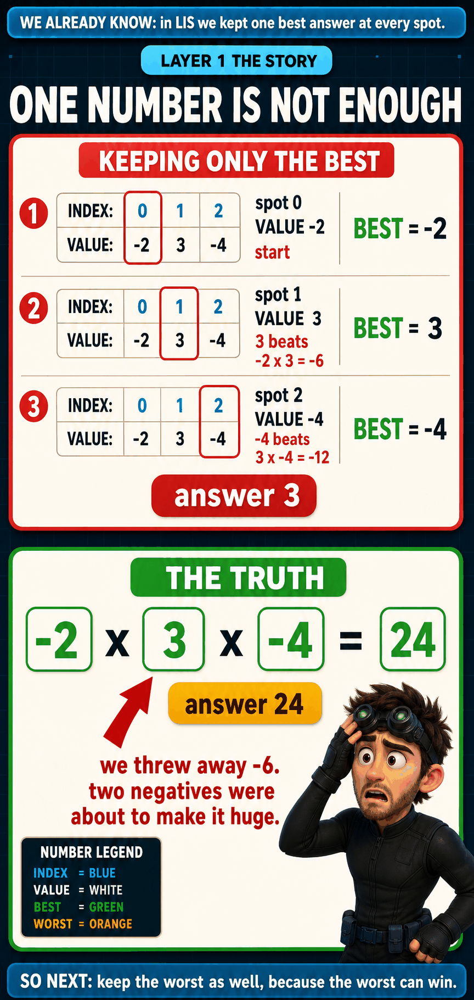
The answer was thrown away at spot 1, when we discarded the -6.
-6 for being the worst thing we had. Then a negative number arrived, and -6 × -4 = 24, the best answer in the whole problem. A negative number turns the worst into the best. So the worst is not junk. It is a candidate in waiting.
18The Move: Carry Both Ends
Same shape as LIS, but each spot now keeps two numbers instead of one.
At any spot there are exactly three runs that could end there, and they are the only three:
| The run | Working | Result |
|---|---|---|
| start fresh, just this number | -4 | -4 |
| extend the best run before it | 3 × -4 | -12 |
| extend the worst run before it | -6 × -4 | 24 |
Then take both ends of those three. The biggest becomes the new BEST (24), and the smallest becomes the new WORST (-12), which we keep for exactly the same reason we kept -6.

Same three candidates for both rows. We take the biggest and the smallest of them.
19Both Rows Filled
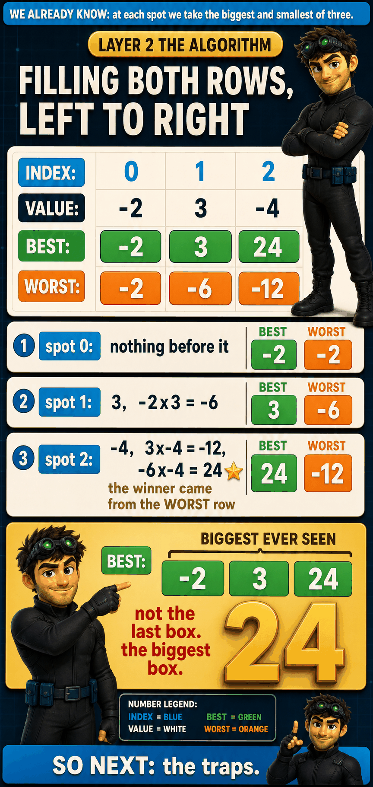
The winning 24 came out of the WORST row, not the BEST row.
def max_product(numbers):
if not numbers:
return 0
# best_ending_here = biggest product of a run ending at this spot
# worst_ending_here = smallest product of a run ending at this spot
best_ending_here = worst_ending_here = biggest = numbers[0]
for value in numbers[1:]:
candidates = (value,
best_ending_here * value,
worst_ending_here * value)
best_ending_here = max(candidates)
worst_ending_here = min(candidates)
biggest = max(biggest, best_ending_here)
return biggestOne line worth noticing: best_ending_here and worst_ending_here are computed from the same candidates tuple. Build that tuple before assigning either, or the second assignment reads a value that has already changed.
O(n) time, O(1) space. Unlike LIS, this one does compress all the way down, because a spot only ever reads the spot immediately before it.
Why does a zero not need special handling?
[0, 2] the answer is 2, and it only works because starting fresh is one of the three candidates. Drop that candidate and you would get 0.20Traps, and What Carries Over
| The slip | Try it on | Wrong | Right | Why |
|---|---|---|---|---|
| kept only the best | [-2, 3, -4] | 3 | 24 | the winner came from the worst row |
| forgot to start fresh | [0, 2] | 0 | 2 | a zero must be escapable |
| read the last box | [2, 3, -2, 4] | 4 | 6 | same trap as LIS. take the biggest ever seen. |
| swapped best and worst | [-1, -2] | -1 | 2 | two negatives make a positive |

Every one dies to a list of two or three numbers.
| LIS (#300) | Max Product (#152) | |
|---|---|---|
| the question at each spot | best chain ending here | best product ending here |
| skipping allowed? | yes, subsequence | no, side by side |
| numbers carried per spot | one | two |
| looks back at | every earlier spot | only the previous spot |
| cost | n × n time, n space | n time, constant space |
| the answer is | the biggest box, never the last box | |